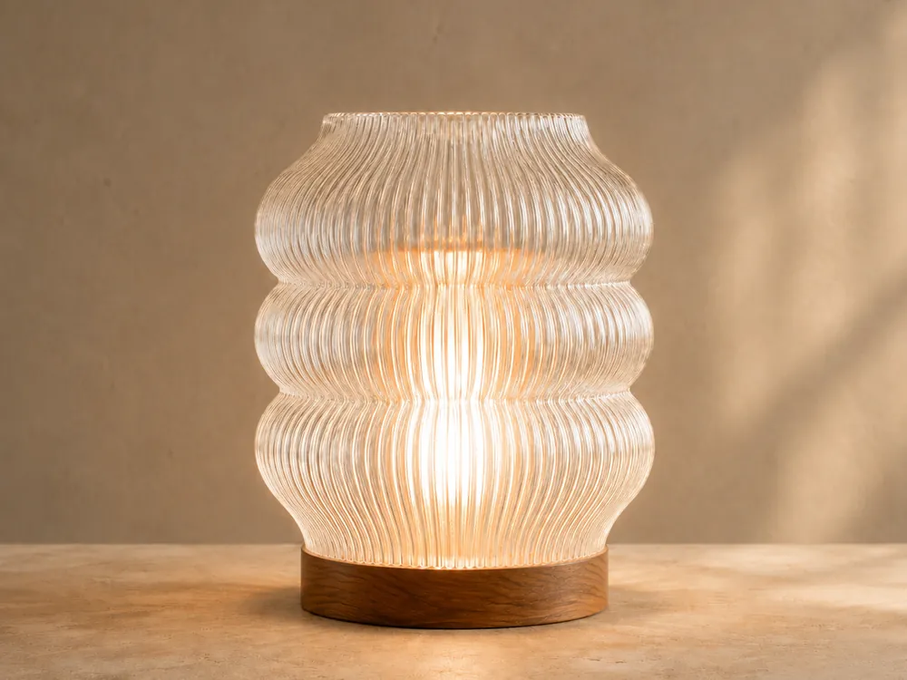
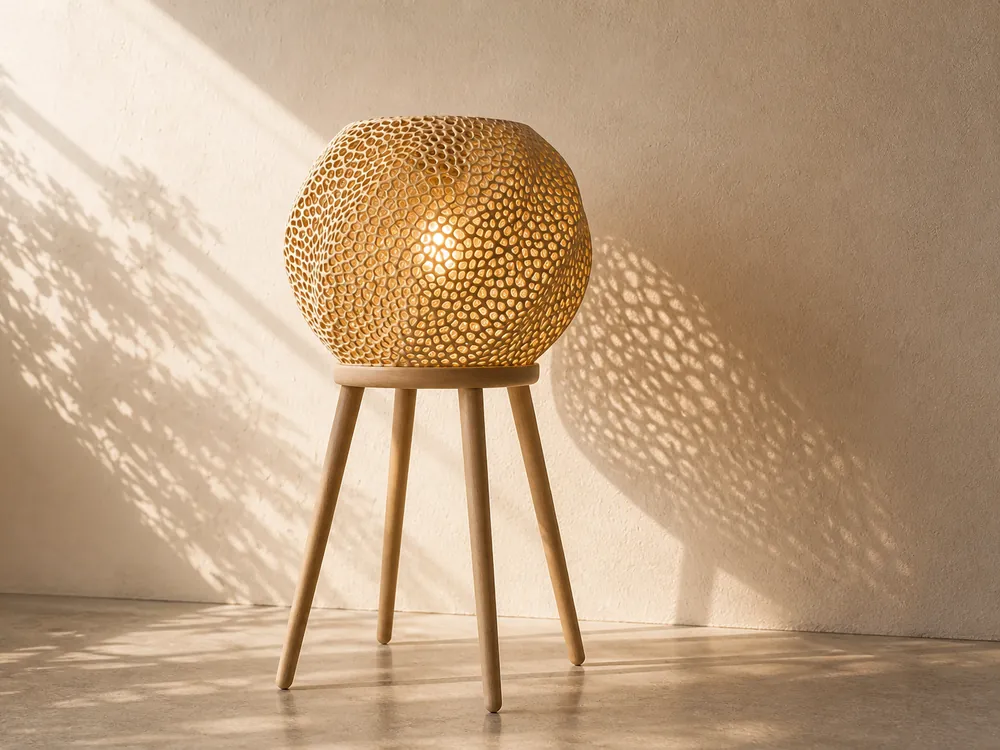
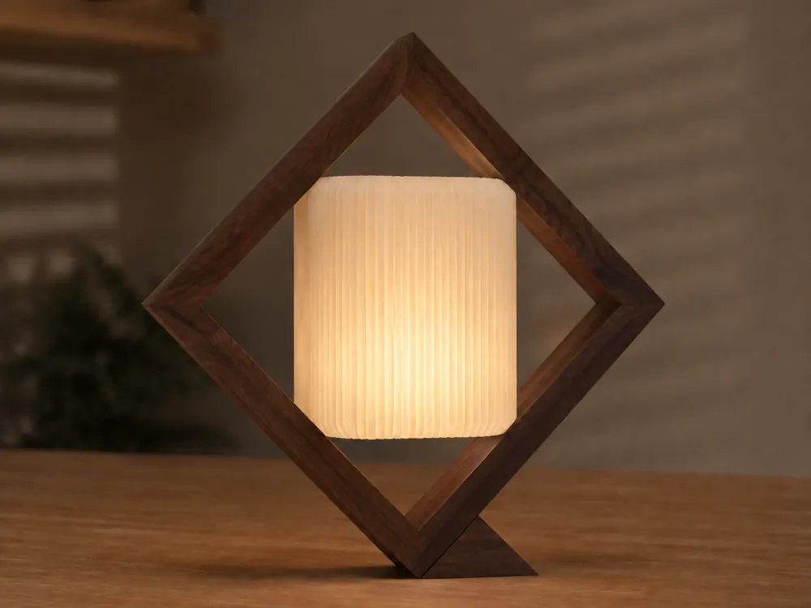
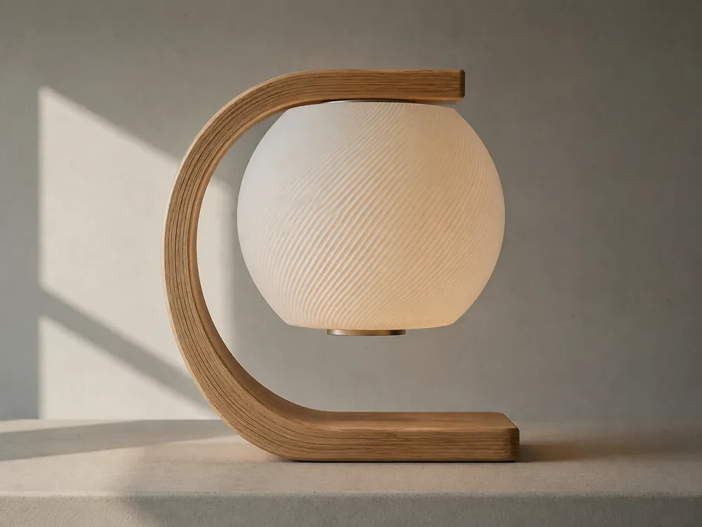

Cuatro familias
Todas las lámparas son de sobremesa: una pantalla impresa arriba y la madera abajo. Lo que cambia entre familias es qué hace la pieza, no de qué está hecha. Veinte modelos en guatambú, fresno o haya.

Orgánicas y suaves
Cuerpos blandos: torsiones, panzas, estrías finas. La madera se hace a un lado.

Geométricas
Un patrón calado que se repite. La luz sale por el dibujo, no a pesar de él.

Arquitectónicas
Marcos, planos rectos y láminas apiladas. Piezas que se apoyan como un edificio.

De autor
Un aro que abraza, un voladizo, un brazo. Acá la madera hace de estructura.
De dónde sale la madera
No se compra en tablero. Sale de descartes de carpintería, de cajones y de muebles viejos: guatambú, fresno, haya. Hay que despiezarla, sacarle los clavos, cepillarla y recién ahí se ve qué pieza puede salir de cada tabla.
Por eso el modelo se elige después de tener la madera, no antes. La veta y el color mandan, y no hay dos lámparas iguales. Se lija hasta grano 320 y se termina con aceite.
La pantalla se imprime aparte, capa por capa, y se monta encima. Ninguna pasa de 18 cm: es lo que entra en la cama de la impresora. Las de la familia De autor llevan además un aro laminado, con láminas finas encoladas y prensadas contra un molde hasta que la cola cura.
Pedidos
Contame qué modelo te gusta, en qué madera y a qué altura está el techo. Te paso plazo y precio. Una lámpara tarda entre dos y tres semanas, porque el encolado tiene que curar sin apuro.